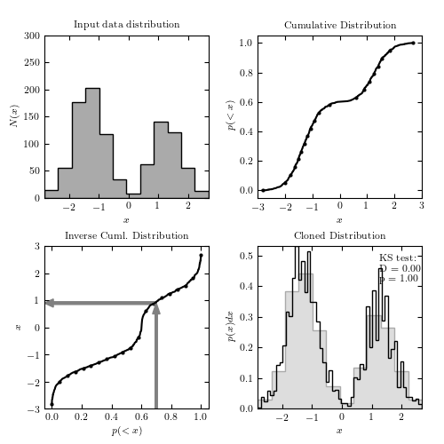

Random Number Generation¶
This example shows how to clone a measured 1-dimensional distribution using astroML.density_estimation.EmpiricalDistribution
KS test: D = 0.0028; p = 1
Optimization terminated successfully.
Current function value: -278.580487
Iterations: 14
Function evaluations: 41
Optimization terminated successfully.
Current function value: -278.580487
Iterations: 14
Function evaluations: 41
Optimization terminated successfully.
Current function value: -35695.900900
Iterations: 16
Function evaluations: 44
# Author: Jake VanderPlas <vanderplas@astro.washington.edu>
# License: BSD
# The figure produced by this code is published in the textbook
# "Statistics, Data Mining, and Machine Learning in Astronomy" (2013)
# For more information, see http://astroML.github.com
import numpy as np
from matplotlib import pyplot as plt
from scipy import stats, interpolate
from astroML.plotting import hist
from astroML.density_estimation import EmpiricalDistribution
#------------------------------------------------------------
# Create a distribution and clone it
Ndata = 1000
Nclone = 100000
np.random.seed(0)
# generate an 'observed' bimodal distribution with 10000 values
dists = (stats.norm(-1.3, 0.5), stats.norm(1.3, 0.5))
fracs = (0.6, 0.4)
x = np.hstack((d.rvs(f * Ndata) for d, f in zip(dists, fracs)))
# We can clone the distribution easily with this function
x_cloned = EmpiricalDistribution(x).rvs(Nclone)
# compute the KS test to check if they're the same
D, p = stats.ks_2samp(x, x_cloned)
print "KS test: D = %.2g; p = %.2g" % (D, p)
#------------------------------------------------------------
# For the sake of this example, we need to calculate some
# of the partial steps used by EmpiricalDistribution
# create a cumulative distribution
x.sort()
Px_cuml = np.linspace(0, 1, Ndata)
# set up an interpolation of the inverse cumulative distribution
tck = interpolate.splrep(Px_cuml, x)
# sample evenly along the cumulative distribution, and interpolate
Px_cuml_sample = np.linspace(0, 1, 10 * Ndata)
x_sample = interpolate.splev(Px_cuml_sample, tck)
#------------------------------------------------------------
# Plot the cloned distribution and the procedure for obtaining it
fig = plt.figure(figsize=(10, 10))
fig.subplots_adjust(hspace=0.25, left=0.1, right=0.95,
bottom=0.08, top=0.92)
indices = np.linspace(0, Ndata - 1, 20).astype(int)
# plot a histogram of the input
ax = fig.add_subplot(221)
hist(x, bins='knuth', ax=ax,
histtype='stepfilled', ec='k', fc='#AAAAAA')
ax.set_ylim(0, 300)
ax.set_title('Input data distribution')
ax.set_xlabel('$x$')
ax.set_ylabel('$N(x)$')
# plot the cumulative distribution
ax = fig.add_subplot(222)
ax.scatter(x[indices], Px_cuml[indices], lw=0, c='k')
ax.plot(x, Px_cuml, '-k')
ax.set_xlim(-3, 3)
ax.set_ylim(-0.05, 1.05)
ax.set_title('Cumulative Distribution')
ax.set_xlabel('$x$')
ax.set_ylabel('$p(<x)$')
# plot the inverse cumulative distribution and spline fit
ax = fig.add_subplot(223)
ax.scatter(Px_cuml[indices], x[indices], lw=0, c='k')
ax.plot(Px_cuml_sample, x_sample, '-k')
ax.arrow(0.7, -3, 0, 3.5, width=0.015, fc='gray', ec='gray', head_length=0.4)
ax.arrow(0.7, 0.9, -0.69, 0, width=0.1, fc='gray', ec='gray', head_length=0.06)
ax.set_xlim(-0.05, 1.05)
ax.set_ylim(-3, 3)
ax.set_title('Inverse Cuml. Distribution')
ax.set_xlabel('$p(<x)$')
ax.set_ylabel('$x$')
# plot the resulting cloned distribution
ax = fig.add_subplot(224)
hist(x, bins='knuth', ax=ax,
histtype='stepfilled', normed=True,
ec='#AAAAAA', fc='#DDDDDD',
label='input data')
hist(x_cloned, bins='knuth', ax=ax,
histtype='step', normed=True,
color='k', label='cloned data')
ax.set_title('Cloned Distribution')
ax.set_xlabel('$x$')
ax.set_ylabel('$p(x)dx$')
ax.text(0.75, 0.95, "KS test:\nD = %.2f\np = %.2f" % (D, p),
ha='left', va='top', transform=ax.transAxes)
plt.show()